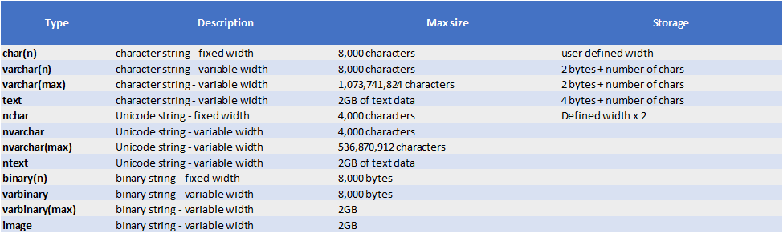

Tekstiandmetüüpide õige valik MS SQL Serveris on kriitilise tähtsusega. Vale tüübi kasutamine võib raisata andmebaasi mahtu või tekitada probleeme erisümbolite (näiteks täpitähtede, teiste tähestike või isegi emojide) salvestamisel. Tekstiandmetüübid jagunevad peamiselt kaheks: tavaline tekst (Non-Unicode) ja rahvusvaheline tekst (Unicode).
Kuldreegel: Kui sul on vaja andmebaasis hoida eesti keele täpitähti (õ, ä, ö, ü), võõrkeelseid sümboleid (nt kirillitsa) või emojisid 🚀, kasuta alati n-iga algavat andmetüüpi (nt nvarchar). See lülitab sisse Unicode totoe, kus iga märk võtab mälus 2 baiti, tagades andmete rikkumata säilimise.
| Andmetüüp | Pikkuse tüüp | Unicode tugi (täpitähed)? | Kõige parem kasutuskoht |
|---|---|---|---|
char(n) |
Fikseeritud | Ei (1 bait = 1 märk) | Alati sama pikkusega koodid (nt isikukood, riigikood "EE") |
varchar(n) |
Muutuv | Ei (1 bait = 1 märk) | Tavaline ingliskeelne tekst, URL-id, süsteemsed logid |
nchar(n) |
Fikseeritud | Jah (2 baiti = 1 märk) | Rahvusvahelised kindla pikkusega lühendid |
nvarchar(n) |
Muutuv | Jah (2 baiti = 1 märk) | Kasutajate eesnimed, perekonnanimed, aadressid, kommentaarid |
Need andmetüübid kasutavad ühe tähemärgi salvestamiseks 1 baiti. Need sobivad hästi siis, kui andmebaas sisaldab ainult ladina tähestikku ja standardseid sümboleid.
Need andmetüübid algavad "n"-tähega (National) ja on tänapäeval sageli vaikimisi valikuks uute rakenduste loomisel, kuna andmed on globaalsed.
ntext tüüpi).Visuaalne abimees õige andmetüübi valimiseks (klõpsa pildil, et seda suurendada):
Küsimus: Milline andmetüüp on kõige optimaalsem ja turvalisem Eesti kodanike eesnimede (nt "Jüri", "Ülle") salvestamiseks andmebaasi?